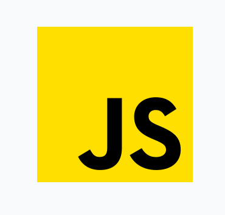
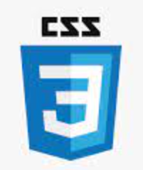
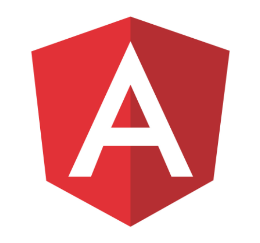
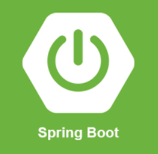
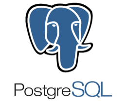
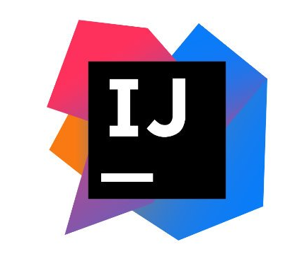

Carreira em desenvolvimento na área da Tecnologia da Informação, focado em Análise e Desenvolvimento de Sistemas, com experiência em gerenciamento de projetos, implementação e manutenção de sistemas, suporte técnico especializado, administração de servidores e redes.
Estou desenvolendo meus conhecimentos e habilidades, visando aperfeiçoamento técnico e constante em novas tecnologias e ferramentas.
Proativo, comunicativo e motivado. Faminto por novos desafios e mudanças.
Formação
-
Cursando 2022
• JAVA, SPRING BOOT, SQL, ANGULAR - FULLSTACK DEVINHOUSE
Faculdade de Tecnologia Senai .
-
Concluído 2017
• GESTÃO PÚBLICA
Unicessumar.
-
Concluído 2019
• MECÂNICA AUTOMOTIVA E MOTORES DIESEL
Sest Senat.
-
Incompleto 2014
• TÉCNICO EM REDES DE COMPUTADORES
Senac TI.
Experiências Profissionais
-
Maio 2022 até o momento.
Sênior sistemas – Fábrica de software Blumenau.
Desenvolvedor
Desenvolvimento Full-Stack.
-
Maio de 2021 até maio 2022.
GRUPO NDTV - RECORD TV.
Assistente de TI
Apoiar na administração de redes e infraestrutura (monitoramento e configuração de switches Dell, HP e Cisco); administração de servidores definindo o controle de acesso e recursos (AD, DHCP); HelpDesk remote; ferramenta de monitoramento de ativos; atendimento de chamados; suporte aos usuários da sede e de todo estado.
-
Março de 2014 até Março 2020.
FORÇA AÉREA BRASILEIRA – BASE AÉREA DE FLORIANÓPOLIS.
S1 - Soldado de Primeira Classe. 2018 á 2020
Montagem e manutenção de computadores e redes; Ludo técnicos; Atendimento aos Militares; instalação e manutenção de software; técnico em Informática e arquivos sigilosos; soluções em redes; controle de acesso e recursos (AD / DHCP); Motorista Pista (2/7 GAV); Serviços de segurança das instalações, atividade de Polícia da Aeronáutica, Defesa de pontos sensíveis, prática de missões de busca e resgate, instrução a novos militares.
-
Setembro de 2020 até Abril 2021.
• CENTRO TÉCNICO AUTOMOTIVO VERONEZI
Auxiliar Mecânico
Realizava manutenção preventiva e corretiva de veículos, troca peças, troca de óleo e limpeza de motores; Auxilio na desmontagem e montagem de motores; Auxilio ao cliente quanto à substituição e aproveitamento de componentes. Laudos mecânicos e elétricos.